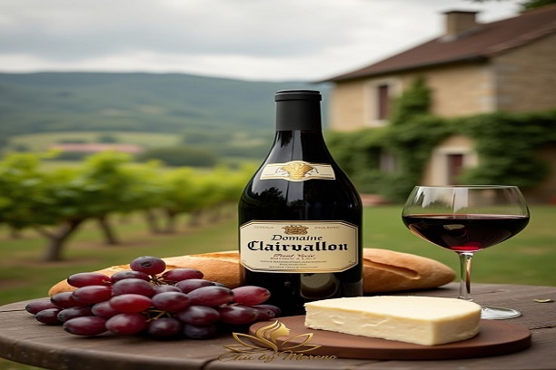

wine
Wine is an alcoholic drink made from fermented fruit. Yeast consumes the sugar in the fruit and converts it to ethanol and carbon dioxide, releasing heat in the process. Wine is most often made from grapes, and the term "wine" generally refers to grape wine when used without any qualification. Even so, wine can be made from a variety of fruit crops, including plum, cherry, pomegranate, blueberry, currant, and elderberry.